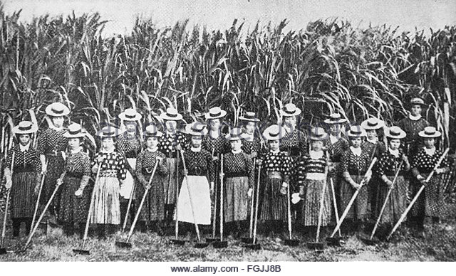

Industrialized Hawaiian sugar production illustrates how market globalization, technology, and consumption can rapidly alter local environments and cultures. In 1875, pressure from the US government forced Hawaii to sign The Treaty of Reciprocity, which immediately increased US’s involvement in Hawaiian governance and agriculture.
Within a decade, US investment in the Hawaiian sugar industry changed Hawaii’s local subsistence economy into a global industrial economy exporting sugar to North America. Increased sugar production replaced the island’s soils, forests, and waters with cash crops. Sugar cane’s industrialized plantation culture exploited both tropical ecology and people by setting up a centralized and hierarchal control over the island that privileged plantation owners over indigenous peoples.
Industrialized Hawaiian sugar production illustrates how market globalization, technology, and consumption can rapidly alter local environments and cultures. In 1875, pressure from the US government forced Hawaii to sign The Treaty of Reciprocity, which immediately increased US’s involvement in Hawaiian governance and agriculture.
Within a decade, US investment in the Hawaiian sugar industry changed Hawaii’s local subsistence economy into a global industrial economy exporting sugar to North America. Increased sugar production replaced the island’s soils, forests, and waters with cash crops. Sugar cane’s industrialized plantation culture exploited both tropical ecology and people by setting up a centralized and hierarchal control over the island that privileged plantation owners over indigenous peoples.
Hawaii’s Industrialized sugar production infrastructure eroded nutrient rich soils, consumed local water flows, and threatened local forests. To feed the large-scale industrial mechanism, sugar planters cut down biodiversity rich communal forests that indigenous communities used for food and shelter. They replaced communal grounds with privately owned sugar cane and beet monocultures that caused new problems like crop disease, pests, and soil depletion.
To sustain this monoculture, sugar industrialists introduced foreign species and chemicals that threatened Hawaii’s unique and sensitive island ecosystem. Nutrient hungry sugarcane quickly depleted rich soils and so farmers relied on commercial fertilizers to sustain its growth. Sugar industrialists created irrigation networks that redirected water away from old growth forests and indigenous communities and towards sugar cane plantations.
Hawaii’s sugar economy created a system that systematically deprived indigenous Hawaiians of their property, voting rights, and life. From 1800-1900 over 600,000 Hawaiians died of died of diseases like measles, chicken pox, polio and tuberculosis from settlers. Sugar industrialists pushed for land privatization and distribution policies, which untangled horizontal bonds within communities and vertical bonds between people and their monarchs. Sugar industrialists took advantage of newly privatized land laws and bought massive parcels of profitable property, which increased their political power and pushed natives out of their homes. As the industry became more mechanized, native sugar farmers couldn’t compete and became swallowed up by sugar plantations making even more natives landless.
Sugar industrialist then pushed for the Bayonet constitution, which restricted the vote to landholders and the rich, which excluded 2/3 Hawaiians. Eventually, US backed sugar interests illegally deposed Queen Lili‘uokalani, and Hawaii eventually lost its serenity.
Within the last 30 years, rising labour costs, new technology, and Hawaii’s focus on tourism has caused most sugar mills to close. Sugar plantations lost land and political power to the growing tourism industry and the military, which caused many factory workers to lose relatively high paying unionized jobs and become folded into the tourism industry. Today, much of the water that once went to sugar plantations now goes to housing complexes.